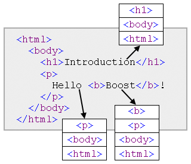

Boost.Flyweight 示例Boost.Flyweight 示例
Boost.Flyweight 示例Boost.Flyweight 示例参见 源代码.
展示 flyweight 基本能力的示例程序, 相关说明见教程.
参见 源代码.
该程序模拟键值享元教程一节所述的场景: 类 texture 管理一些纹理渲染数据, 这些数据存储在一个文件中, 文件位置在构造时给出. 程序通过把这些对象封装为以文件名为键的键值享元来处理大量此类对象. 请观察程序的执行结果: 除了绝对必要的那些, 没有产生任何额外的 texture 类型对象的构造或拷贝.
参见 源代码.
组合设计模式的核心思想是: 通过以多态方式定义树节点类型 — 使其要么是叶子节点, 要么包含指向其子节点指针的列表 — 可以轻松构造和操纵树形数据结构. 这样, 一棵树与它的根节点就是同一个实体, 从而允许非常简单的递归树处理算法. 具有高度节点和子树重复性的大型组合树 (例如解析计算机程序时生成的树) 非常适合享元惯用法: 只需把节点类型变成享元, 就能自动处理节点与子树级别的重复.
示例程序解析形如 (a1 ... an) 的类 Lisp 列表, 其中每个 ai 是一个终结字符串或一个列表. 解析得到的数据结构是一个组合类型, 使用 Boost.Flyweight 与 Boost.Variant 的递归设施共同定义. 于是, 给定列表
(= (tan (+ x y))(/ (+ (tan x)(tan y))(- 1 (* (tan x)(tan y)))))
结果数据结构隐式地检测出了 +、x、y、tan、(tan x) 和 (tan y) 的重复出现.
参见 源代码.
享元模式应用的一个经典例子是处理带有丰富格式化信息字符的文本处理器, 格式化信息包括字体类型、大小、颜色和特殊选项 (粗体、斜体等). 为每个字符编码格式化信息会占用相当多的空间, 但鉴于文档中典型的高度重复性, 把格式化字符维护为享元对象可大幅减少内存消耗.
示例程序按照基于享元的表示技术来解析、操纵并存储 HTML 文档. 鉴于 HTML 标记的层次特性, 对给定字符格式化选项的粗略近似, 就是把它们等同于该字符所属的标签上下文栈, 如图所示.

HTML 文档随后被解析为 (字符, 格式) 对的数组, 其中格式即如上所述的标签上下文. 格式化信息中极高的冗余度由 Boost.Flyweight 处理. 这种基于字符的表示使文档的操纵变得容易: 文本的移位与删除都是平凡操作. 例如, 程序反转了文档中段文本. 把结果保存为 HTML 只需遍历格式化字符数组, 并在相邻字符的上下文变化时输出开/闭 HTML 标签.
为简洁起见, 本程序的 HTML 解析能力较为粗糙: 例如, 没有结束标签的元素 (如 <BR>)、字符编码以及 HTML 实体 (例如表示 © 的 "©") 都没有得到妥善处理. 改进解析代码留给读者作为练习.
参见 源代码.
记忆化是一种优化技术, 其做法是缓存计算结果以供日后复用; 例如, 这在计算递归数值函数时可以显著提升性能. 键值享元可用于为数值函数 f 实现记忆化, 办法是把该函数的一次记忆化调用建模为 flyweight<key_value<int,compute_f> > 类型的值, 其中 compute_f 是一种在其构造函数处计算 f(n) 的类型, 该构造函数即 compute_f::compute_f(int). 例如, 斐波那契数可以这样用记忆化来计算:
typedef flyweight<key_value<int,compute_fibonacci>,no_tracking> fibonacci; struct compute_fibonacci { compute_fibonacci(int n): result(n==0?0:n==1?1:fibonacci(n-2).get()+fibonacci(n-1).get()) {} operator int()const{return result;} int result; };
使用 no_tracking 策略是为了让记忆化的计算在程序的整个生命周期中持续保存以备后用. 所提供的程序完整地展开了这个例子.
参见 源代码.
如果 T 可序列化 (使用 Boost.Serialization), 则 flyweight<T> 也自动可序列化. 示例程序执行以下两个互补的流程:
std::vector<flyweight<std::string> >, 并把该结构保存到一个序列化文件.std::vector<flyweight<std::string> >, 并把它写为文本文件.flyweight 对象时避免重复输出信息.
参见 源代码.
该程序在一个常规任务中 (解析文件并对解析后的文本做一些处理) 测量一种简单字符串类型与若干不同配置的 flyweight 实例化相比的时间和空间性能. 内存消耗的计算方式是: 用自定义分配器对相关组件 (字符串类型本身、享元工厂等) 进行插桩, 跟踪其请求的分配与释放. 性能一节给出的实验结果即由该程序产生.
参见 源代码.
该示例展示如何编写和使用自定义工厂类. 这个 "啰嗦" 工厂会输出消息, 跟踪 Boost.Flyweight 对其公共接口的调用, 从而帮助用户直观地了解工厂的使用模式.
参见 源代码.
该程序加载一个文本文件, 并使用多个线程并行地把其内容分词为单词 (字母字符序列). 单词以普通 std::string 或不同的 boost::flyweight 配置存储. 以下是在一台配备 Intel Core i5-8265U CPU 和 8 GB 内存、运行 Visual Studio 2022 的 Windows 机器上对 http://mattmahoney.net/dc/enwik9.zip (1,000 百万字节规模的维基百科片段) 的结果:
std::string, 1 thread(s): 141176630 words, 11.4551 s
std::string, 8 thread(s): 141176630 words, 2.75682 s
regular flyweight, 1 thread(s): 141176630 words, 19.2284 s
regular flyweight, 8 thread(s): 141176630 words, 36.0344 s
concurrent flyweight, 1 thread(s): 141176630 words, 20.9516 s
concurrent flyweight, 8 thread(s): 141176630 words, 7.84129 s
在并行场景中 boost::flyweight<std::string> 表现较差, 因为它在创建享元时有类级别的锁. 另一方面, 使用 concurrent_factory 配合 no_locking 和 no_tracking 在并行化下达到了更高的带宽.
最后修订于 2024 年 9 月 21 日
版权所有 © 2006-2024 Joaquín M López Muñoz. 按 Boost 软件许可 1.0 版 (Boost Software License, Version 1.0) 分发. (随附文件 LICENSE_1_0.txt 或复制于 http://www.boost.org/LICENSE_1_0.txt)